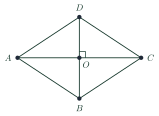
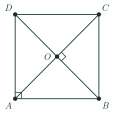
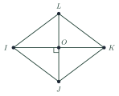
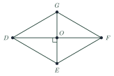
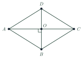
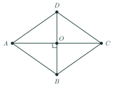
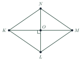
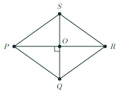

Rhombi and SquaresHình thoi và hình vuông
Grade 8 · Topic: QuadrilateralsLớp 8 · Chủ đề: Tứ giác
1Lesson IntroductionGiới thiệu bài học
Learning goalsMục tiêu bài học
By the end of this lesson you can:
Sau bài học này, em có thể:
recognize a rhombus and a square;
nhận biết được hình thoi và hình vuông;
use their properties: perpendicular diagonals that bisect the angles (rhombus); equal and perpendicular diagonals (square);
sử dụng được tính chất: hai đường chéo vuông góc và là tia phân giác của các góc (hình thoi); hai đường chéo bằng nhau và vuông góc (hình vuông);
use the tests for a rhombus and a square.
dùng được các dấu hiệu nhận biết hình thoi, hình vuông.
2Mathematical VocabularyTừ vựng Toán học
rhombus (plural rhombi) – a quadrilateral with four equal sides.
Hình thoi – tứ giác có bốn cạnh bằng nhau.
square – a quadrilateral with four right angles and four equal sides.
Hình vuông – tứ giác có bốn góc vuông và bốn cạnh bằng nhau.
adjacent sides – two sides with a common vertex.
Hai cạnh kề – hai cạnh có chung một đỉnh.
angle bisector – a ray dividing an angle into two equal angles.
Tia phân giác – tia chia một góc thành hai góc bằng nhau.
perpendicular – meeting at a right angle: \(AC\perp BD\).
Vuông góc – cắt nhau tạo thành góc vuông: \(AC\perp BD\).
3Useful English PhrasesCụm từ tiếng Anh thường gặp
Use the figure to identify the perpendicular diagonals of rhombus \(ABCD\).
Dựa vào hình, chỉ ra hai đường chéo vuông góc của hình thoi \(ABCD\).
Since \(ABCD\) is a rhombus, \(AC\perp BD\). Diagonal \(AC\) bisects \(\widehat{DAB}\).
Vì \(ABCD\) là hình thoi nên \(AC\perp BD\); đường chéo \(AC\) là phân giác của \(\widehat{DAB}\).
Because \(AB=BC\) and \(ABCD\) is a parallelogram, it is also a rhombus.
Vì \(AB=BC\) và \(ABCD\) là hình bình hành nên nó là hình thoi.
A rectangle with two congruent adjacent sides is a square.
Hình chữ nhật có hai cạnh kề bằng nhau là hình vuông.
Since \(KLMN\) is both a rectangle and a rhombus, it is a square.
Vì \(KLMN\) vừa là hình chữ nhật vừa là hình thoi nên nó là hình vuông.
4Prerequisite ReviewÔn tập kiến thức nền
Parallelogram, rectangle (Lessons 12–13). Diagonals bisect each other; a rectangle has equal diagonals.
Hình bình hành, hình chữ nhật (Bài 12, 13). Hai đường chéo cắt nhau tại trung điểm mỗi đường; hình chữ nhật có hai đường chéo bằng nhau.
Area of a rhombus (grade 6). \(S=\dfrac{d_1d_2}{2}\).
Diện tích hình thoi (lớp 6). \(S=\dfrac{d_1d_2}{2}\).
5TheoryLý thuyết
5.1 RhombiHình thoi
Definition and propertiesĐịnh nghĩa và tính chất
A rhombus is a quadrilateral with four equal sides. It is a parallelogram, so it has all the properties of a parallelogram.
Hình thoi là tứ giác có bốn cạnh bằng nhau. Hình thoi là một hình bình hành nên có mọi tính chất của hình bình hành.
In addition: the diagonals are perpendicular, and each diagonal bisects two angles of the rhombus.
Ngoài ra: hai đường chéo vuông góc với nhau; mỗi đường chéo là đường phân giác của hai góc của hình thoi.

Tests for a rhombusDấu hiệu nhận biết hình thoi
1) a quadrilateral with four equal sides; 2) a parallelogram with two equal adjacent sides; 3) a parallelogram with perpendicular diagonals; 4) a parallelogram in which a diagonal bisects an angle.
1) tứ giác có bốn cạnh bằng nhau; 2) hình bình hành có hai cạnh kề bằng nhau; 3) hình bình hành có hai đường chéo vuông góc; 4) hình bình hành có một đường chéo là đường phân giác của một góc.
5.2 SquaresHình vuông
Definition and propertiesĐịnh nghĩa và tính chất
A square is a quadrilateral with four right angles and four equal sides. A square is both a rectangle and a rhombus: its diagonals are equal, perpendicular, bisect each other and bisect the angles.
Hình vuông là tứ giác có bốn góc vuông và bốn cạnh bằng nhau. Hình vuông vừa là hình chữ nhật vừa là hình thoi: hai đường chéo bằng nhau, vuông góc, cắt nhau tại trung điểm mỗi đường và là phân giác các góc.

Tests for a squareDấu hiệu nhận biết hình vuông
1) a rectangle with two equal adjacent sides; 2) a rectangle with perpendicular diagonals; 3) a rhombus with a right angle; 4) a rhombus with equal diagonals.
1) hình chữ nhật có hai cạnh kề bằng nhau; 2) hình chữ nhật có hai đường chéo vuông góc; 3) hình thoi có một góc vuông; 4) hình thoi có hai đường chéo bằng nhau.
Watch out!Lưu ý
A quadrilateral with perpendicular diagonals is not always a rhombus: it must first be a parallelogram.
Tứ giác có hai đường chéo vuông góc chưa chắc là hình thoi: trước hết nó phải là hình bình hành.
6Worked ExamplesVí dụ có lời giải
ExampleVí dụ 1RememberingNhận biết – Sides of a rhombusCạnh của hình thoi
Rhombus \(ABCD\) has \(AB=5\) cm. Find its perimeter and the angle between its diagonals.
Hình thoi \(ABCD\) có \(AB=5\) cm. Tính chu vi và góc giữa hai đường chéo.
Analysis: Four equal sides; perpendicular diagonals.
Phân tích: Bốn cạnh bằng nhau; hai đường chéo vuông góc.
Perimeter \(4\cdot5=20\) cm; the diagonals meet at \(90^\circ\).
Chu vi \(4\cdot5=20\) cm; hai đường chéo vuông góc (\(90^\circ\)).
20 cm; \(90^\circ\).
20 cm; \(90^\circ\).
ExampleVí dụ 2UnderstandingThông hiểu – Rhombus with xHình thoi có ẩn x
Rhombus \(WXYZ\) has \(WX=3x+5\), \(XY=5x-9\) (cm) and \(\widehat{XWZ}=68^\circ\). Find \(x\), the side, \(\widehat{XWY}\) and \(\widehat{WZY}\).
Hình thoi \(WXYZ\) có \(WX=3x+5\), \(XY=5x-9\) (cm) và \(\widehat{XWZ}=68^\circ\). Tìm \(x\), độ dài cạnh, \(\widehat{XWY}\) và \(\widehat{WZY}\).
Analysis: Equal sides; the diagonal bisects the angle; consecutive angles are supplementary.
Phân tích: Các cạnh bằng nhau; đường chéo là phân giác; hai góc kề một cạnh bù nhau.
\(3x+5=5x-9\Rightarrow x=7\); side \(26\) cm.
\(3x+5=5x-9\Rightarrow x=7\); cạnh dài \(26\) cm.
\(\widehat{XWY}=68^\circ:2=34^\circ\); \(\widehat{WZY}=180^\circ-68^\circ=112^\circ\).
\(\widehat{XWY}=68^\circ:2=34^\circ\); \(\widehat{WZY}=180^\circ-68^\circ=112^\circ\).
\(x=7\); 26 cm; \(34^\circ\); \(112^\circ\).
\(x=7\); 26 cm; \(34^\circ\); \(112^\circ\).
ExampleVí dụ 3UnderstandingThông hiểu – Diagonals of a squareĐường chéo hình vuông
In square \(JKLM\), the diagonals meet at \(P\) and \(JP=4.5\) cm. Find \(KP\), \(LP\), \(MP\), \(JL\), \(KM\) and \(\widehat{KJL}\).
Hình vuông \(JKLM\) có hai đường chéo cắt nhau tại \(P\), \(JP=4{,}5\) cm. Tính \(KP\), \(LP\), \(MP\), \(JL\), \(KM\) và \(\widehat{KJL}\).
Analysis: Equal diagonals bisecting each other and the angles.
Phân tích: Hai đường chéo bằng nhau, cắt nhau tại trung điểm, là phân giác các góc.
\(KP=LP=MP=4.5\) cm; \(JL=KM=9\) cm.
\(KP=LP=MP=4{,}5\) cm; \(JL=KM=9\) cm.
\(\widehat{KJL}=90^\circ:2=45^\circ\).
\(\widehat{KJL}=90^\circ:2=45^\circ\).
\(4.5\) cm; \(9\) cm; \(45^\circ\).
\(4{,}5\) cm; \(9\) cm; \(45^\circ\).
ExampleVí dụ 4Basic applicationVận dụng thấp – Proving a squareChứng minh hình vuông
The diagonals \(PR\), \(QS\) of quadrilateral \(PQRS\) meet at \(T\) with \(PT=TR\), \(QT=TS\), \(PR=QS\) and \(PR\perp QS\). Prove that \(PQRS\) is a square.
Hai đường chéo \(PR\), \(QS\) của tứ giác \(PQRS\) cắt nhau tại \(T\), \(PT=TR\), \(QT=TS\), \(PR=QS\) và \(PR\perp QS\). Chứng minh \(PQRS\) là hình vuông.
Analysis: Go step by step: parallelogram → rectangle → square.
Phân tích: Lần lượt: hình bình hành → hình chữ nhật → hình vuông.
Diagonals bisect each other ⇒ parallelogram; equal diagonals ⇒ rectangle.
Hai đường chéo cắt nhau tại trung điểm ⇒ hình bình hành; hai đường chéo bằng nhau ⇒ hình chữ nhật.
A rectangle with perpendicular diagonals ⇒ square.
Hình chữ nhật có hai đường chéo vuông góc ⇒ hình vuông.
\(PQRS\) is a square.
\(PQRS\) là hình vuông.
ExampleVí dụ 5ApplicationVận dụng – Tiling the courtyardLát gạch sân trường
The class designs a tiling for the school courtyard with rhombus tiles whose diagonals are 30 cm and 40 cm. What area do 50 tiles cover?
Lớp thiết kế mẫu lát sân trường bằng gạch hình thoi có hai đường chéo 30 cm và 40 cm. 50 viên gạch lát được diện tích bao nhiêu?
Analysis: Area of a rhombus \(=\dfrac{d_1d_2}{2}\).
Phân tích: Diện tích hình thoi \(=\dfrac{d_1d_2}{2}\).
One tile: \(\dfrac{30\cdot40}{2}=600\) cm².
Một viên: \(\dfrac{30\cdot40}{2}=600\) cm².
50 tiles: \(50\cdot600=30000\) cm² \(=3\) m².
50 viên: \(50\cdot600=30000\) cm² \(=3\) m².
\(30000\) cm² (3 m²).
\(30000\) cm² (3 m²).
7PracticeBài tập luyện tập
A. Multiple ChoiceA. Trắc nghiệm nhiều lựa chọn
Rhombus \(EFGH\) has perimeter 20 cm. Find \(FG\).
Hình thoi \(EFGH\) có chu vi 20 cm. Tính \(FG\).
Answer: c. \(20:4=5\) cm.
Đáp án c. \(20:4=5\) cm.
Rhombus \(IJKL\) has \(\widehat{LIJ}=70^\circ\). Find \(\widehat{JIK}\).

Hình thoi \(IJKL\) có \(\widehat{LIJ}=70^\circ\). Tính \(\widehat{JIK}\).
Answer: b. Diagonal \(IK\) bisects \(\widehat{LIJ}\): \(70^\circ:2=35^\circ\).
Đáp án b. Đường chéo \(IK\) là phân giác của \(\widehat{LIJ}\): \(70^\circ:2=35^\circ\).
Which figure is always a rhombus?
Hình nào chắc chắn là hình thoi?
Answer: b. Compare with the tests for a rhombus and for a square.
Đáp án b. Đối chiếu với các dấu hiệu nhận biết hình thoi, hình vuông.
B. True or FalseB. Đúng hoặc sai
Every square is a rectangle.
Mọi hình vuông đều là hình chữ nhật.
True. Recall the properties of rhombi and squares.
Đúng. Nhớ lại tính chất của hình thoi, hình vuông.
Square \(MNPQ\) has diagonals meeting at \(O\) and \(OM=4\) cm. Then \(ON=4\) cm.
Hình vuông \(MNPQ\) có hai đường chéo cắt nhau tại \(O\), \(OM=4\) cm. Khi đó \(ON=4\) cm.
True. The diagonals of a square are equal and bisect each other: \(ON=OM=4\) cm.
Đúng. Hai đường chéo của hình vuông bằng nhau và cắt nhau tại trung điểm mỗi đường: \(ON=OM=4\) cm.
C. Short AnswerC. Trả lời ngắn
Rhombus \(KLMN\) has \(KL=3x+3\) and \(LM=5x-17\) (cm). Find the length of a side (cm).
Hình thoi \(KLMN\) có \(KL=3x+3\) và \(LM=5x-17\) (cm). Tính độ dài cạnh hình thoi (cm).
Enter a number.
Nhập một số.
Answer: 33. \(3x+3=5x-17\Rightarrow x=10\); side \(=33\) cm.
Đáp số: 33. \(3x+3=5x-17\Rightarrow x=10\); cạnh \(=33\) cm.
Square \(IJKL\) has diagonals meeting at \(O\), and \(OI=5\) cm. Find \(JL\) (cm).
Hình vuông \(IJKL\) có hai đường chéo cắt nhau tại \(O\), \(OI=5\) cm. Tính \(JL\) (cm).
Enter a number.
Nhập một số.
Answer: 10. \(JL=IK=2\cdot5=10\) cm.
Đáp số: 10. \(JL=IK=2\cdot5=10\) cm.
D1. Self-practice – RememberingD1. Tự luyện – Mức Nhận biết
By definition, a rhombus is a quadrilateral that has…
Theo định nghĩa, hình thoi là tứ giác có
Answer: b. Recall the definitions.
Đáp án b. Nhớ lại định nghĩa.
In rhombus \(DEFG\), the diagonals meet at \(O\). Which statement is always true?

Hình thoi \(DEFG\) có hai đường chéo cắt nhau tại \(O\). Khẳng định nào luôn đúng?
Answer: a. The diagonals of a rhombus are perpendicular.
Đáp án a. Hai đường chéo của hình thoi vuông góc với nhau.
Square \(IJKL\) has diagonals meeting at \(O\). Find \(\widehat{JIK}\).
Hình vuông \(IJKL\) có hai đường chéo cắt nhau tại \(O\). Tính \(\widehat{JIK}\).
Answer: a. \(\widehat{JIK}=45^\circ\).
Đáp án a. \(\widehat{JIK}=45^\circ\).
D2. Self-practice – UnderstandingD2. Tự luyện – Mức Thông hiểu
Rhombus \(EFGH\) has \(EF=3x+6\) and \(GH=7x-18\) (cm). Find its perimeter.
Hình thoi \(EFGH\) có \(EF=3x+6\) và \(GH=7x-18\) (cm). Tính chu vi hình thoi.
Answer: b. \(x=6\), side \(24\) cm, perimeter \(96\) cm.
Đáp án b. \(x=6\), cạnh \(24\) cm, chu vi \(96\) cm.
Rhombus \(KLMN\) has \(\widehat{NKL}=96^\circ\). Find \(\widehat{KLN}\).
Hình thoi \(KLMN\) có \(\widehat{NKL}=96^\circ\). Tính \(\widehat{KLN}\).
Answer: b. \(\widehat{KLM}=180^\circ-96^\circ=84^\circ\), and \(LN\) bisects it: \(42^\circ\).
Đáp án b. \(\widehat{KLM}=180^\circ-96^\circ=84^\circ\), mà \(LN\) là phân giác nên bằng \(42^\circ\).
Rhombus \(KLMN\) has diagonals 12 cm and 14 cm. Find its area.
Hình thoi \(KLMN\) có hai đường chéo dài 12 cm và 14 cm. Tính diện tích hình thoi.
Answer: b. \(S=\dfrac{12\cdot14}{2}=84\) cm².
Đáp án b. \(S=\dfrac{12\cdot14}{2}=84\) cm².
D3. Self-practice – Basic applicationD3. Tự luyện – Mức Vận dụng thấp
Quadrilateral \(ABCD\) satisfies: \(AB=BC=CD=DA\). What is the most precise name for it?
Tứ giác \(ABCD\) thỏa mãn: \(AB=BC=CD=DA\). Tên gọi chính xác nhất của nó là
Answer: c. Use the tests for rhombi and squares.
Đáp án c. Dùng các dấu hiệu nhận biết hình thoi, hình vuông.
Rhombus \(ABCD\) has \(\widehat{A}=62^\circ\). Find the angle between diagonal \(AC\) and side \(AB\).
Hình thoi \(ABCD\) có \(\widehat{A}=62^\circ\). Tính góc tạo bởi đường chéo \(AC\) và cạnh \(AB\).
Answer: d. The diagonal bisects \(\widehat{A}\): \(31^\circ\).
Đáp án d. Đường chéo là phân giác của \(\widehat{A}\): \(31^\circ\).
Square \(ABCD\) has side 8 cm. \(M\) and \(N\) are the midpoints of \(AB\) and \(CD\). What kind of quadrilateral is \(AMND\) and what is its perimeter?
Hình vuông \(ABCD\) có cạnh 8 cm; \(M\), \(N\) lần lượt là trung điểm của \(AB\), \(CD\). Tứ giác \(AMND\) là hình gì và có chu vi bằng bao nhiêu?
Answer: a. Three right angles → rectangle with sides 4 cm and 8 cm: perimeter \(2(4+8)=24\) cm.
Đáp án a. Có ba góc vuông → hình chữ nhật với hai cạnh 4 cm và 8 cm: chu vi \(2(4+8)=24\) cm.
D4. Self-practice – Advanced applicationD4. Tự luyện – Mức Vận dụng
A floor is decorated with 11 rhombus-shaped tiles; each tile has diagonals 16 cm and 30 cm. What area do the tiles cover?
Một nền nhà được lát 11 viên gạch hình thoi, mỗi viên có hai đường chéo dài 16 cm và 30 cm. Diện tích phần nền được lát là bao nhiêu?
Answer: d. One tile: \(16\cdot30:2=240\) cm²; total \(11\cdot240=2640\) cm².
Đáp án d. Một viên: \(16\cdot30:2=240\) cm²; tổng \(11\cdot240=2640\) cm².
A decorative frame is made of 9 rhombi with side 39 cm, built from separate wooden bars (no bars shared). How many centimeters of wood are needed?
Một khung trang trí gồm 9 hình thoi cạnh 39 cm, mỗi hình làm từ các thanh gỗ riêng (không dùng chung thanh). Cần tất cả bao nhiêu xăng-ti-mét thanh gỗ?
Answer: d. \(9\cdot4\cdot39=1404\) cm.
Đáp án d. \(9\cdot4\cdot39=1404\) cm.
A garden bed has four equal sides. What extra condition makes it a square?
Một bồn hoa có bốn cạnh bằng nhau. Cần thêm điều kiện gì để nó là hình vuông?
Answer: c. Four equal sides → rhombus (already with perpendicular diagonals); a rhombus with equal diagonals is a square.
Đáp án c. Bốn cạnh bằng nhau → hình thoi (đã có hai đường chéo vuông góc); hình thoi có hai đường chéo bằng nhau là hình vuông.
A. Multiple ChoiceA. Trắc nghiệm nhiều lựa chọn
Rhombus \(MNPQ\) has perimeter 56 cm. Find \(NP\).
Hình thoi \(MNPQ\) có chu vi 56 cm. Tính \(NP\).
Answer: b. \(56:4=14\) cm.
Đáp án b. \(56:4=14\) cm.
Rhombus \(ABCD\) has \(\widehat{DAB}=76^\circ\). Find \(\widehat{BAC}\).

Hình thoi \(ABCD\) có \(\widehat{DAB}=76^\circ\). Tính \(\widehat{BAC}\).
Answer: b. Diagonal \(AC\) bisects \(\widehat{DAB}\): \(76^\circ:2=38^\circ\).
Đáp án b. Đường chéo \(AC\) là phân giác của \(\widehat{DAB}\): \(76^\circ:2=38^\circ\).
Which of these is a test for a rhombus?
Đâu là một dấu hiệu nhận biết hình thoi?
Answer: a. Compare with the tests for a rhombus and for a square.
Đáp án a. Đối chiếu với các dấu hiệu nhận biết hình thoi, hình vuông.
B. True or FalseB. Đúng hoặc sai
Every square is a rhombus.
Mọi hình vuông đều là hình thoi.
True. Recall the properties of rhombi and squares.
Đúng. Nhớ lại tính chất của hình thoi, hình vuông.
Square \(IJKL\) has diagonals meeting at \(O\) and \(OI=8\) cm. Then \(OJ=8\) cm.
Hình vuông \(IJKL\) có hai đường chéo cắt nhau tại \(O\), \(OI=8\) cm. Khi đó \(OJ=8\) cm.
True. The diagonals of a square are equal and bisect each other: \(OJ=OI=8\) cm.
Đúng. Hai đường chéo của hình vuông bằng nhau và cắt nhau tại trung điểm mỗi đường: \(OJ=OI=8\) cm.
C. Short AnswerC. Trả lời ngắn
Rhombus \(PQRS\) has \(PQ=2x+1\) and \(QR=4x-11\) (cm). Find the length of a side (cm).
Hình thoi \(PQRS\) có \(PQ=2x+1\) và \(QR=4x-11\) (cm). Tính độ dài cạnh hình thoi (cm).
Enter a number.
Nhập một số.
Answer: 13. \(2x+1=4x-11\Rightarrow x=6\); side \(=13\) cm.
Đáp số: 13. \(2x+1=4x-11\Rightarrow x=6\); cạnh \(=13\) cm.
Square \(MNPQ\) has diagonals meeting at \(O\), and \(OM=15\) cm. Find \(NQ\) (cm).
Hình vuông \(MNPQ\) có hai đường chéo cắt nhau tại \(O\), \(OM=15\) cm. Tính \(NQ\) (cm).
Enter a number.
Nhập một số.
Answer: 30. \(NQ=MP=2\cdot15=30\) cm.
Đáp số: 30. \(NQ=MP=2\cdot15=30\) cm.
D1. Self-practice – RememberingD1. Tự luyện – Mức Nhận biết
A square is a quadrilateral with…
Hình vuông là tứ giác có
Answer: a. Recall the definitions.
Đáp án a. Nhớ lại định nghĩa.
In rhombus \(ABCD\), the diagonals meet at \(O\). Which statement is always true?

Hình thoi \(ABCD\) có hai đường chéo cắt nhau tại \(O\). Khẳng định nào luôn đúng?
Answer: d. The diagonals of a rhombus are perpendicular.
Đáp án d. Hai đường chéo của hình thoi vuông góc với nhau.
Square \(ABCD\) has diagonals meeting at \(O\). Find \(\widehat{AOB}\).
Hình vuông \(ABCD\) có hai đường chéo cắt nhau tại \(O\). Tính \(\widehat{AOB}\).
Answer: a. \(\widehat{AOB}=90^\circ\).
Đáp án a. \(\widehat{AOB}=90^\circ\).
D2. Self-practice – UnderstandingD2. Tự luyện – Mức Thông hiểu
Rhombus \(WXYZ\) has \(WX=3x+6\) and \(YZ=6x-6\) (cm). Find its perimeter.
Hình thoi \(WXYZ\) có \(WX=3x+6\) và \(YZ=6x-6\) (cm). Tính chu vi hình thoi.
Answer: d. \(x=4\), side \(18\) cm, perimeter \(72\) cm.
Đáp án d. \(x=4\), cạnh \(18\) cm, chu vi \(72\) cm.
Rhombus \(EFGH\) has \(\widehat{HEF}=86^\circ\). Find \(\widehat{EFH}\).
Hình thoi \(EFGH\) có \(\widehat{HEF}=86^\circ\). Tính \(\widehat{EFH}\).
Answer: d. \(\widehat{EFG}=180^\circ-86^\circ=94^\circ\), and \(FH\) bisects it: \(47^\circ\).
Đáp án d. \(\widehat{EFG}=180^\circ-86^\circ=94^\circ\), mà \(FH\) là phân giác nên bằng \(47^\circ\).
Rhombus \(EFGH\) has diagonals 12 cm and 9 cm. Find its area.
Hình thoi \(EFGH\) có hai đường chéo dài 12 cm và 9 cm. Tính diện tích hình thoi.
Answer: c. \(S=\dfrac{12\cdot9}{2}=54\) cm².
Đáp án c. \(S=\dfrac{12\cdot9}{2}=54\) cm².
D3. Self-practice – Basic applicationD3. Tự luyện – Mức Vận dụng thấp
Quadrilateral \(WXYZ\) satisfies: \(WX=XY=YZ=ZW\) and \(\widehat{W}=90^\circ\). What is the most precise name for it?
Tứ giác \(WXYZ\) thỏa mãn: \(WX=XY=YZ=ZW\) và \(\widehat{W}=90^\circ\). Tên gọi chính xác nhất của nó là
Answer: c. Use the tests for rhombi and squares.
Đáp án c. Dùng các dấu hiệu nhận biết hình thoi, hình vuông.
Rhombus \(WXYZ\) has \(\widehat{W}=54^\circ\). Find the angle between diagonal \(WY\) and side \(WX\).
Hình thoi \(WXYZ\) có \(\widehat{W}=54^\circ\). Tính góc tạo bởi đường chéo \(WY\) và cạnh \(WX\).
Answer: a. The diagonal bisects \(\widehat{W}\): \(27^\circ\).
Đáp án a. Đường chéo là phân giác của \(\widehat{W}\): \(27^\circ\).
Square \(ABCD\) has side 10 cm. \(M\) and \(N\) are the midpoints of \(AB\) and \(CD\). What kind of quadrilateral is \(AMND\) and what is its perimeter?
Hình vuông \(ABCD\) có cạnh 10 cm; \(M\), \(N\) lần lượt là trung điểm của \(AB\), \(CD\). Tứ giác \(AMND\) là hình gì và có chu vi bằng bao nhiêu?
Answer: a. Three right angles → rectangle with sides 5 cm and 10 cm: perimeter \(2(5+10)=30\) cm.
Đáp án a. Có ba góc vuông → hình chữ nhật với hai cạnh 5 cm và 10 cm: chu vi \(2(5+10)=30\) cm.
D4. Self-practice – Advanced applicationD4. Tự luyện – Mức Vận dụng
A floor is decorated with 29 rhombus-shaped tiles; each tile has diagonals 18 cm and 24 cm. What area do the tiles cover?
Một nền nhà được lát 29 viên gạch hình thoi, mỗi viên có hai đường chéo dài 18 cm và 24 cm. Diện tích phần nền được lát là bao nhiêu?
Answer: a. One tile: \(18\cdot24:2=216\) cm²; total \(29\cdot216=6264\) cm².
Đáp án a. Một viên: \(18\cdot24:2=216\) cm²; tổng \(29\cdot216=6264\) cm².
A decorative frame is made of 5 rhombi with side 52 cm, built from separate wooden bars (no bars shared). How many centimeters of wood are needed?
Một khung trang trí gồm 5 hình thoi cạnh 52 cm, mỗi hình làm từ các thanh gỗ riêng (không dùng chung thanh). Cần tất cả bao nhiêu xăng-ti-mét thanh gỗ?
Answer: d. \(5\cdot4\cdot52=1040\) cm.
Đáp án d. \(5\cdot4\cdot52=1040\) cm.
A window frame has four equal sides. Which extra measurement shows that it is a square?
Một khung cửa sổ có bốn cạnh bằng nhau. Đo thêm điều gì để biết nó là hình vuông?
Answer: d. Four equal sides → rhombus (already with perpendicular diagonals); a rhombus with equal diagonals is a square.
Đáp án d. Bốn cạnh bằng nhau → hình thoi (đã có hai đường chéo vuông góc); hình thoi có hai đường chéo bằng nhau là hình vuông.
A. Multiple ChoiceA. Trắc nghiệm nhiều lựa chọn
Rhombus \(PQRS\) has side \(PQ=20\) cm. Find its perimeter.
Hình thoi \(PQRS\) có cạnh \(PQ=20\) cm. Tính chu vi của hình thoi.
Answer: a. Four equal sides: \(4\cdot20=80\) cm.
Đáp án a. Bốn cạnh bằng nhau: \(4\cdot20=80\) cm.
Rhombus \(KLMN\) has \(\widehat{NKL}=64^\circ\). Find \(\widehat{KLM}\).

Hình thoi \(KLMN\) có \(\widehat{NKL}=64^\circ\). Tính \(\widehat{KLM}\).
Answer: c. Consecutive angles are supplementary.
Đáp án c. Hai góc kề một cạnh bù nhau.
Which of these is a test for a square?
Đâu là một dấu hiệu nhận biết hình vuông?
Answer: a. Compare with the tests for a rhombus and for a square.
Đáp án a. Đối chiếu với các dấu hiệu nhận biết hình thoi, hình vuông.
B. True or FalseB. Đúng hoặc sai
The diagonals of a rhombus are equal.
Hai đường chéo của hình thoi bằng nhau.
False. Recall the properties of rhombi and squares.
Sai. Nhớ lại tính chất của hình thoi, hình vuông.
Square \(WXYZ\) has diagonals meeting at \(O\) and \(OW=3\) cm. Then \(OX=3\) cm.
Hình vuông \(WXYZ\) có hai đường chéo cắt nhau tại \(O\), \(OW=3\) cm. Khi đó \(OX=3\) cm.
True. The diagonals of a square are equal and bisect each other: \(OX=OW=3\) cm.
Đúng. Hai đường chéo của hình vuông bằng nhau và cắt nhau tại trung điểm mỗi đường: \(OX=OW=3\) cm.
C. Short AnswerC. Trả lời ngắn
Rhombus \(PQRS\) has \(PQ=2x+6\) and \(QR=5x-3\) (cm). Find the length of a side (cm).
Hình thoi \(PQRS\) có \(PQ=2x+6\) và \(QR=5x-3\) (cm). Tính độ dài cạnh hình thoi (cm).
Enter a number.
Nhập một số.
Answer: 12. \(2x+6=5x-3\Rightarrow x=3\); side \(=12\) cm.
Đáp số: 12. \(2x+6=5x-3\Rightarrow x=3\); cạnh \(=12\) cm.
Square \(MNPQ\) has diagonals meeting at \(O\), and \(OM=13\) cm. Find \(NQ\) (cm).
Hình vuông \(MNPQ\) có hai đường chéo cắt nhau tại \(O\), \(OM=13\) cm. Tính \(NQ\) (cm).
Enter a number.
Nhập một số.
Answer: 26. \(NQ=MP=2\cdot13=26\) cm.
Đáp số: 26. \(NQ=MP=2\cdot13=26\) cm.
D1. Self-practice – RememberingD1. Tự luyện – Mức Nhận biết
By definition, a square is a quadrilateral that has…
Theo định nghĩa, hình vuông là tứ giác có
Answer: d. Recall the definitions.
Đáp án d. Nhớ lại định nghĩa.
In rhombus \(PQRS\), the diagonals meet at \(O\). Which statement is always true?

Hình thoi \(PQRS\) có hai đường chéo cắt nhau tại \(O\). Khẳng định nào luôn đúng?
Answer: c. The diagonals of a rhombus are perpendicular.
Đáp án c. Hai đường chéo của hình thoi vuông góc với nhau.
Square \(PQRS\) has diagonals meeting at \(O\). Find \(\widehat{QPR}\).
Hình vuông \(PQRS\) có hai đường chéo cắt nhau tại \(O\). Tính \(\widehat{QPR}\).
Answer: d. \(\widehat{QPR}=45^\circ\).
Đáp án d. \(\widehat{QPR}=45^\circ\).
D2. Self-practice – UnderstandingD2. Tự luyện – Mức Thông hiểu
Rhombus \(KLMN\) has \(KL=4x+9\) and \(MN=7x-18\) (cm). Find its perimeter.
Hình thoi \(KLMN\) có \(KL=4x+9\) và \(MN=7x-18\) (cm). Tính chu vi hình thoi.
Answer: a. \(x=9\), side \(45\) cm, perimeter \(180\) cm.
Đáp án a. \(x=9\), cạnh \(45\) cm, chu vi \(180\) cm.
Rhombus \(DEFG\) has \(\widehat{GDE}=112^\circ\). Find \(\widehat{DEG}\).
Hình thoi \(DEFG\) có \(\widehat{GDE}=112^\circ\). Tính \(\widehat{DEG}\).
Answer: b. \(\widehat{DEF}=180^\circ-112^\circ=68^\circ\), and \(EG\) bisects it: \(34^\circ\).
Đáp án b. \(\widehat{DEF}=180^\circ-112^\circ=68^\circ\), mà \(EG\) là phân giác nên bằng \(34^\circ\).
Rhombus \(EFGH\) has diagonals 6 cm and 8 cm. Find its area.
Hình thoi \(EFGH\) có hai đường chéo dài 6 cm và 8 cm. Tính diện tích hình thoi.
Answer: c. \(S=\dfrac{6\cdot8}{2}=24\) cm².
Đáp án c. \(S=\dfrac{6\cdot8}{2}=24\) cm².
D3. Self-practice – Basic applicationD3. Tự luyện – Mức Vận dụng thấp
Quadrilateral \(ABCD\) satisfies: \(AB=BC=CD=DA\) and \(\widehat{A}=90^\circ\). What is the most precise name for it?
Tứ giác \(ABCD\) thỏa mãn: \(AB=BC=CD=DA\) và \(\widehat{A}=90^\circ\). Tên gọi chính xác nhất của nó là
Answer: b. Use the tests for rhombi and squares.
Đáp án b. Dùng các dấu hiệu nhận biết hình thoi, hình vuông.
Rhombus \(MNPQ\) has \(\widehat{M}=132^\circ\). Find the angle between diagonal \(MP\) and side \(MN\).
Hình thoi \(MNPQ\) có \(\widehat{M}=132^\circ\). Tính góc tạo bởi đường chéo \(MP\) và cạnh \(MN\).
Answer: c. The diagonal bisects \(\widehat{M}\): \(66^\circ\).
Đáp án c. Đường chéo là phân giác của \(\widehat{M}\): \(66^\circ\).
Square \(ABCD\) has side 4 cm. \(M\) and \(N\) are the midpoints of \(AB\) and \(CD\). What kind of quadrilateral is \(AMND\) and what is its perimeter?
Hình vuông \(ABCD\) có cạnh 4 cm; \(M\), \(N\) lần lượt là trung điểm của \(AB\), \(CD\). Tứ giác \(AMND\) là hình gì và có chu vi bằng bao nhiêu?
Answer: b. Three right angles → rectangle with sides 2 cm and 4 cm: perimeter \(2(2+4)=12\) cm.
Đáp án b. Có ba góc vuông → hình chữ nhật với hai cạnh 2 cm và 4 cm: chu vi \(2(2+4)=12\) cm.
D4. Self-practice – Advanced applicationD4. Tự luyện – Mức Vận dụng
A floor is decorated with 55 rhombus-shaped tiles; each tile has diagonals 20 cm and 30 cm. What area do the tiles cover?
Một nền nhà được lát 55 viên gạch hình thoi, mỗi viên có hai đường chéo dài 20 cm và 30 cm. Diện tích phần nền được lát là bao nhiêu?
Answer: b. One tile: \(20\cdot30:2=300\) cm²; total \(55\cdot300=16500\) cm².
Đáp án b. Một viên: \(20\cdot30:2=300\) cm²; tổng \(55\cdot300=16500\) cm².
A decorative frame is made of 8 rhombi with side 50 cm, built from separate wooden bars (no bars shared). How many centimeters of wood are needed?
Một khung trang trí gồm 8 hình thoi cạnh 50 cm, mỗi hình làm từ các thanh gỗ riêng (không dùng chung thanh). Cần tất cả bao nhiêu xăng-ti-mét thanh gỗ?
Answer: a. \(8\cdot4\cdot50=1600\) cm.
Đáp án a. \(8\cdot4\cdot50=1600\) cm.
A tile-maker checks a tile: its four sides are equal. What else must she check to be sure it is a square?
Người thợ kiểm tra một viên gạch có bốn cạnh bằng nhau. Cần kiểm tra thêm điều gì để chắc chắn viên gạch là hình vuông?
Answer: b. Four equal sides → rhombus (already with perpendicular diagonals); a rhombus with equal diagonals is a square.
Đáp án b. Bốn cạnh bằng nhau → hình thoi (đã có hai đường chéo vuông góc); hình thoi có hai đường chéo bằng nhau là hình vuông.
8Common MistakesLỗi thường gặp
Equal diagonals in a rhombus. In general they are not equal (only in a square).
Cho rằng hình thoi có hai đường chéo bằng nhau. Nói chung không (chỉ hình vuông mới có).
Perpendicular diagonals ⇒ rhombus. Only for a parallelogram.
Hai đường chéo vuông góc ⇒ hình thoi. Chỉ đúng với hình bình hành.
Every rectangle is a square. No: every square is a rectangle, not conversely.
Mọi hình chữ nhật là hình vuông. Sai: mọi hình vuông là hình chữ nhật, không có chiều ngược lại.
Forgetting to halve the angle. The diagonal of a rhombus makes half of the vertex angle with a side.
Quên chia đôi góc. Đường chéo hình thoi tạo với cạnh một góc bằng nửa góc ở đỉnh.
9Lesson SummaryTổng kết
Rhombus: four equal sides; diagonals perpendicular and bisect the angles.
Hình thoi: bốn cạnh bằng nhau; hai đường chéo vuông góc và là phân giác các góc.
Square: rectangle + rhombus; diagonals equal, perpendicular, bisecting each other.
Hình vuông: vừa là hình chữ nhật vừa là hình thoi; hai đường chéo bằng nhau, vuông góc, cắt nhau tại trung điểm mỗi đường.
Use the tests in the right order: parallelogram → rectangle / rhombus → square.
Dùng dấu hiệu theo thứ tự: hình bình hành → hình chữ nhật / hình thoi → hình vuông.
Key English: rhombus, square, adjacent sides, angle bisector, perpendicular.
Thuật ngữ cần nhớ (chạm vào để xem tiếng Anh): hình thoi, hình vuông, hai cạnh kề, tia phân giác, vuông góc.